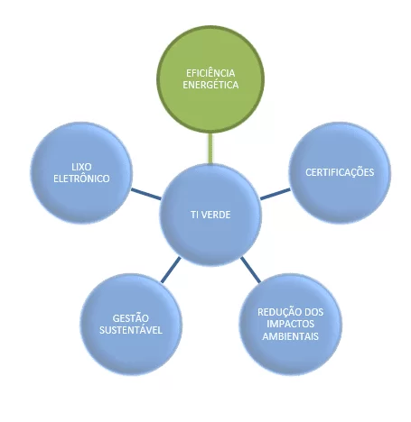

Eficiência Energética
A eficiência energética em TI busca reduzir o consumo de energia nos ambientes tecnológicos, promovendo o uso sustentável dos recursos digitais. Essa prática envolve a adoção de equipamentos com baixo gasto energético, o uso de virtualização de servidores, o desligamento automático de dispositivos ociosos e a migração para data centers sustentáveis. Além de diminuir custos operacionais, a eficiência energética contribui para a redução da pegada de carbono e preservação do meio ambiente, tornando a tecnologia uma aliada na construção de um futuro mais verde e responsável.
